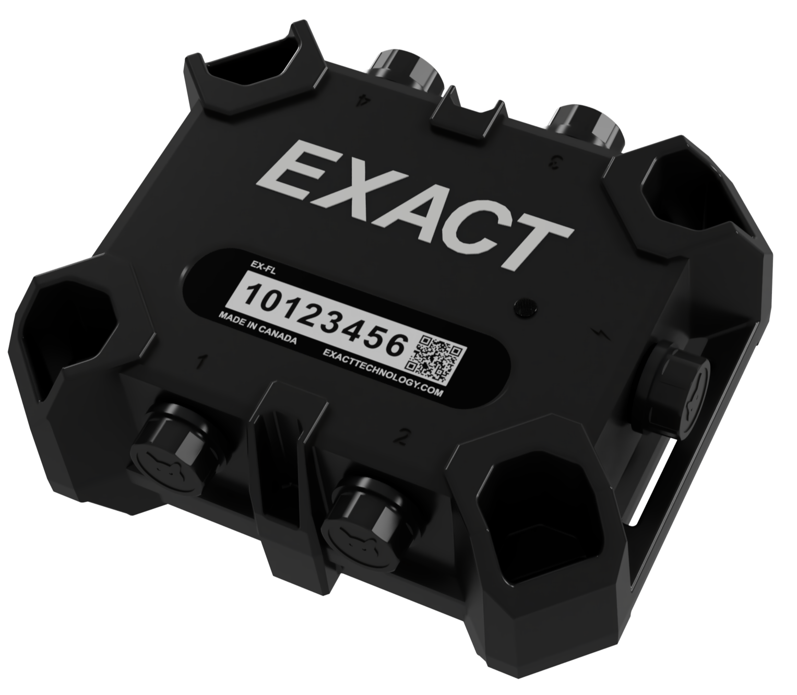

EXACT Flex
Sophisticated, Ruggedized Temperature Monitoring for the Concrete Industry
Flex is a durable and versatile temperature monitoring device for use in the concrete industry. The device accepts up to 4 temperature sensors, and measures temperature on a preset interval. On the quarter hour, the device uploads data to the cloud for clients to view on our online portal. As the sole mechanical designer on the project, I was responsible for the entire design and physical validation testing of the product. My solution was a 3 piece injection molded shell with custom designed connectors and a miriad of mounting features. The PCBA is contained inside a secondary shell within the device, which allowed the device to be sealed using potting compound but still allowing for PCBA recovery in the rare case of failure. Due to the custom EPDM gasket and partial potting, the device is fully waterproof and extremely durable, a neccessity in the concrete industry. During design, I performed drop tests, waterproof tests and thermal cycling. I also assisted in preparing our in-house production team for assembly, and the eventual hand-off to a contract manufacturer.
Gallery